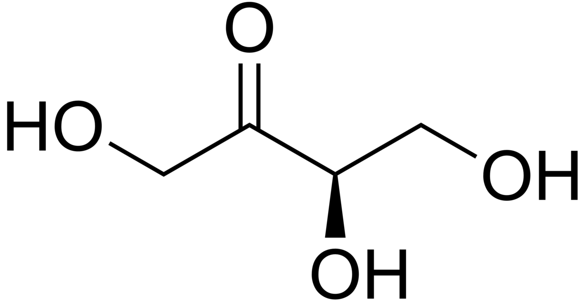
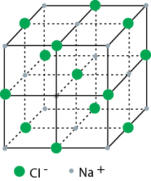
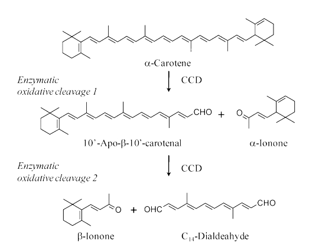

The baking process of pizza is crucial. The cheese melts, the flavors mature, and the dough cooks to have a crunchy outside and soft inside. Several processes and reactions are involved in the baking process.
| Flour | Water | Salt | Yeast | Tomatoes | Cheese | Garlic | Oregano | Olive Oil |
|---|---|---|---|---|---|---|---|---|
|  |  |
|
While most people invision flour as a naturally white powder, pure and unaltered flour is actually a pale yellow color due to the carotenoid content. In order to give the flour a nicer appearance, benzoyl peroxide is used to bleach the flour. By oxidizing the carotenoids, there are less colored compounds after bleaching. Regular flour exhibits natural aging that is required for baking. When exposed to atmospheric content, the flour naturally oxidizes its xanthophyll content and "ages" over the course of a few months, creating a more stable compund for baking. This bleaching process bypasses this natural aging and allows for quicker product turnout. However, bleaching flour results in production of benzoic acid, a substance that can be mildly toxic if ingested. Below, the figure depicts an example of enzymatic oxidation of beta-carotene.
Pizza dough begins as a mix of salt, yeast, flour, water. When these ingredients are mixed together, single-celled fungi in the form of yeast leave their dormancy and begin to break down the complex sugars found in the dough. This process of fermentation releases carbon dioxide and causes the dough to aerate and rise. The salt in the dough both adds flavor and keeps the dough from rising too quickly. Keeping the dough from rising too quickly ensures a stable gluten formation resulting in the differential texture found in the dough's hard surface and soft interior after baking
At temperatures above 140 degrees Celsius, sugars and amino acids react to create flavor compounds and adds a bold, cooked flavor to the pie. This is how the crust, cheese, and toppings get the “browned” effect after cooking. This dark color is a result of the formation of melanoid compounds. The dough, however, is still soft underneath the cheese and sauce and toppings, which creates an exciting mixture of texture when eaten. This process of non-enymatic browning is a result of the reaction between reducing sugars and amine-containing compounds. Below, the steps of the Maillard reaction are illustrated. The rate-limiting factor of the Schiff Base is the first step in this reaction. The formation of a keto compound is then achieved through an enol intermediate stage. These keto compounds can then form the dark, desirable pigments.
Forced air or natural convection with radiation is used for most baking processes; low humidities and high temperatures result in the formation of crust on pizza. When heated, the moisture in the pizza spreads outwards and is then vaporized from the surface.